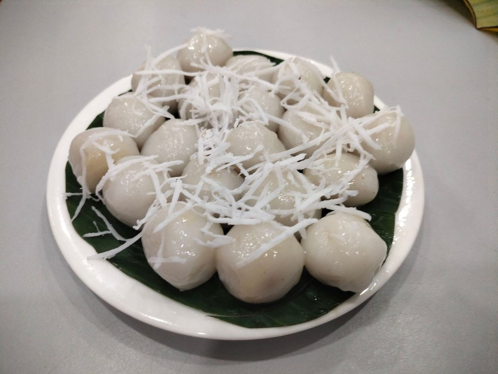

Home
Mont Lone Yay Baw(Myanmar Luckyball) Recipe

Description
Mont Lone Yay Baw (Glutinous Rice Balls with Jaggery) is a beloved
traditional Burmese dessert most famously associated with Thingyan, the
Myanmar New Year Water Festival. Its name literally translates to "rice
balls floating on water," referring to the way the dumplings float to the
surface of boiling water once they are fully cooked. Making and sharing
this treat is a joyful community tradition where families and neighbors
gather to roll the dough together.
These chewy, bite-sized dumplings are made from a simple blend of
glutinous rice flour and regular rice flour, wrapped around a sweet core
of palm jaggery (htanyet). When bitten into, the warm, melted jaggery
bursts in the mouth, perfectly balanced by a generous topping of freshly
grated coconut. Occasionally, playful bakers hide a bird's eye chili
inside one of the balls as a lighthearted surprise for an unsuspecting
friend!
Ingredients
- Glutinous rice flour – 2 cups
-
Regular rice flour – 1/2 cup (helps give the dough a firmer, pleasant
chew)
- Warm water – 1 to 1.25 cups (added gradually as needed)
- Palm jaggery (Htanyet) – 150 g (cut into small, bite-sized cubes)
- Fresh coconut – 1 cup (finely grated)
- Salt – a pinch (to mix with the grated coconut and dough)
- Banana leaves or parchment paper – for serving
Steps
-
Prepare the dough: In a large mixing bowl, combine the glutinous rice
flour, regular rice flour, and a tiny pinch of salt. Gradually pour in
the warm water while kneading until you form a smooth, pliable dough
that does not stick to your hands (similar to playdough consistency).
-
Shape and fill the balls: Pinch off a small, walnut-sized piece of dough
and roll it into a smooth ball. Flatten it slightly with your thumb to
create a small indent in the center, place a cube of palm jaggery
inside, and carefully pinch the edges closed, rolling it again into a
seamless round ball. (Ensure there are no cracks so the melted jaggery
doesn't leak out while boiling).
-
Boil the water: Bring a large pot of water to a rolling boil over
medium-high heat.
-
Cook the rice balls: Gently drop the filled rice balls into the boiling
water in batches so they don't stick together. Once the balls float to
the surface, let them boil for an additional 1 to 2 minutes to ensure
the jaggery inside is completely melted.
-
Cool and drain: Use a slotted spoon to scoop out the floating rice balls
and transfer them immediately into a bowl of room-temperature or cool
water for a few seconds to stop the cooking process and keep them from
sticking. Drain well.
-
Garnish and serve: Arrange the warm rice balls on a plate lined with a
banana leaf. Top generously with freshly grated coconut mixed with a
pinch of salt, and serve immediately while the jaggery center is still
warm and gooey.